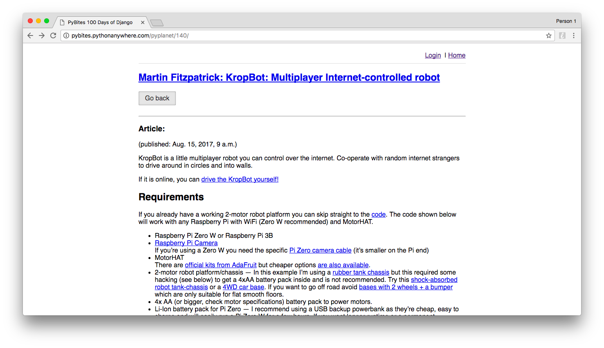
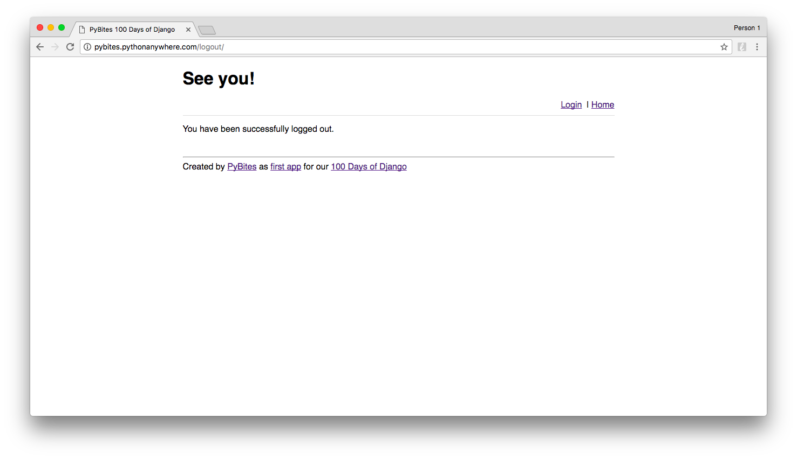

Life is about facing new challenges - Kostya Tszyu
Hi Pythonistas, a new week, a new 'bite' of Python goodness. As anticipated this week we dedicate a challenge to Selenium testing. We think this is a cool skill to add to your web dev + testing repertoire.
Our first intuition was to let you pull a Django app, but this might lead to config confusion. So let's test our first Django app.
The main page is actually our 100DaysOfDjango home where we want to add more apps over time.
We ask you to help PyBites dev to deliver tests for this app using Selenium:
Go to the http://pyplanet.herokuapp.com/. The header should say PyBites 100 Days of Django. The navbar has Login and Home links. The first link in the main div is PyPlanet Article Sharer App:

Click on the PyPlanet Article Sharer App link and test the page contains a table with a th (table header) containing the word Title. This app watches the PyPlanet feed so the titles change every day so that is hard test. What we can test though is if the table contains 100 entries (tr).

Go to an article and check there is only a Go back button (logged out view). Check if the header link at the top is the same as the link you clicked on, in this example: Martin Fitzpatrick: KropBot: Multiplayer Internet-controlled robot. The Go back should redirect back to the app's home page.

Using Selenium click Login and login with user: guest / password: changeme - then click the blue Login button:

Check you are redirected back to 100Days home and if navigation contains Welcome back, guest! and Logout and Home links:

Going back to the article link (3.), check that you now have a Tweet this button alongside the Go back button. Optionally you can check the link of the Tweet this button (extra check: PyBites entries have New PyBites Article prepended).

Finally logout with Selenium and check for See you! and You have been successfully logged out., logout in the URL, and navbar links are Login and Home again:

By the way, if you don't like this app or want to test a Flask app (or other web framework), be our guest. Just mention it in your PR submission.
If you like to test even more you need superuser rights. As we use this app ourselves we only provide a guest login at this point. Nobody stops you though from cloning the repo and get it working locally.
Apart from extra Django setup practice, doing so can can additionally test:
Create a Django superuser and use it to login to the app. Click the Mark Skipped button on an article and check if it marks the entry as orange back at the main app page/table view. Going back to the same article, the button is deactivated and the button text changed to Already skipped.
(still logged in) click the Mark Shared button on another article and check if it marks the entry green back at the main app page/table view. Going back to the same article, the button is deactivated and the button text changed to Already shared.
For both 1. and 2. the blue Tweet this button should have disappeared.
Again here is how the app looks with superuser rights.
Test-Driven Development With Python aka Obey the Testing Goat! - chapter 1 kicks off with a Selenium functional test.
See our INSTALL doc how to fork our challenges repo to get cracking.
This doc also provides you with instructions how you can submit your code to our community branch via a Pull Request (PR). We will feature your PRs in our end-of-the-week challenge review (previous editions).
If you have ideas for a future challenge or find any issues, open a GH Issue or reach out directly.
Last but not least: there is no best solution, only learning more and better Python. Good luck!
Keep Calm and Code in Python!
-- Bob and Julian